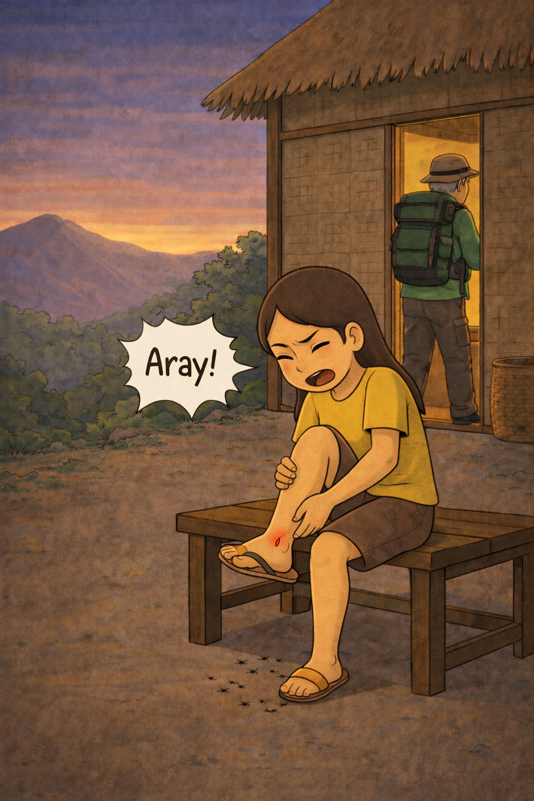
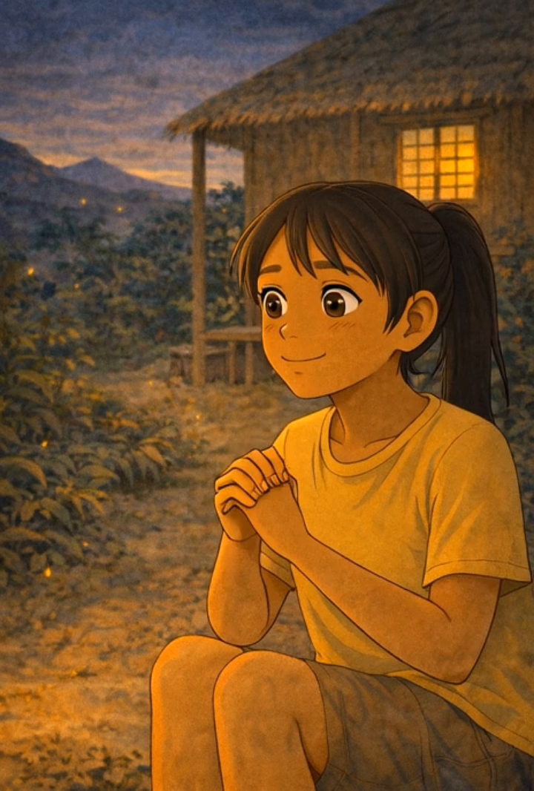
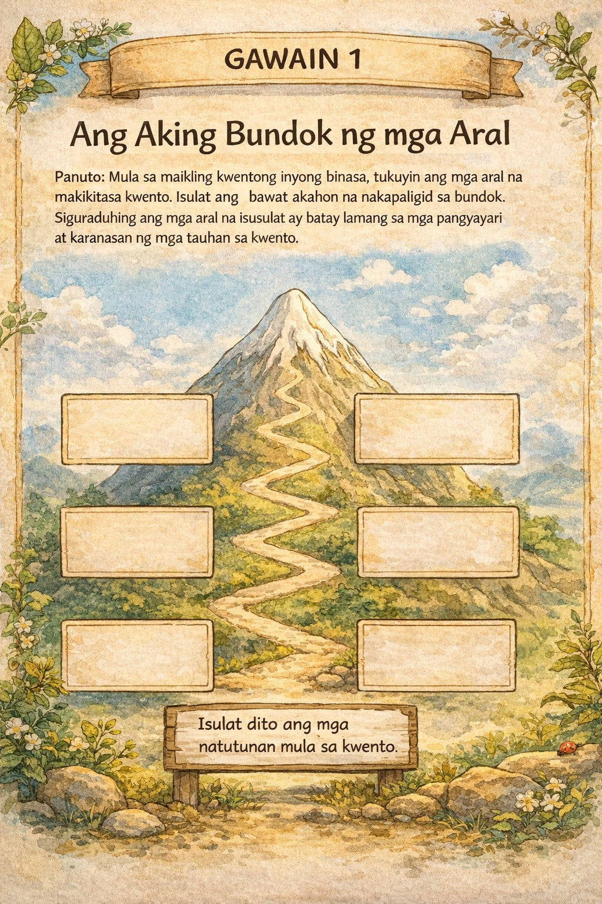
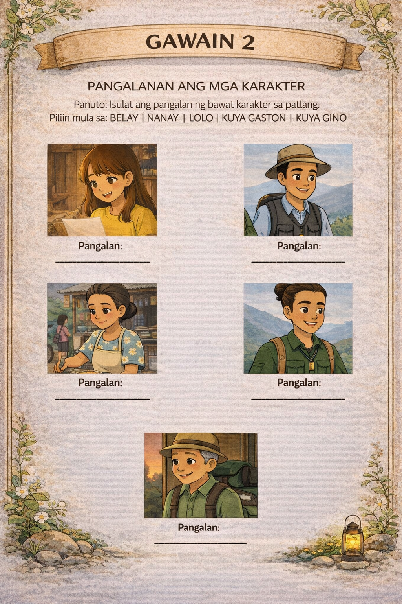
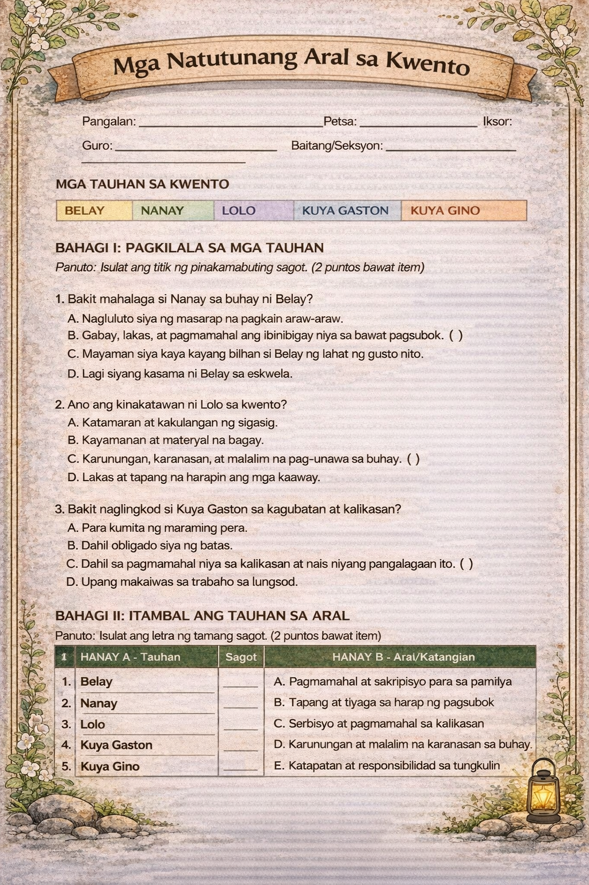
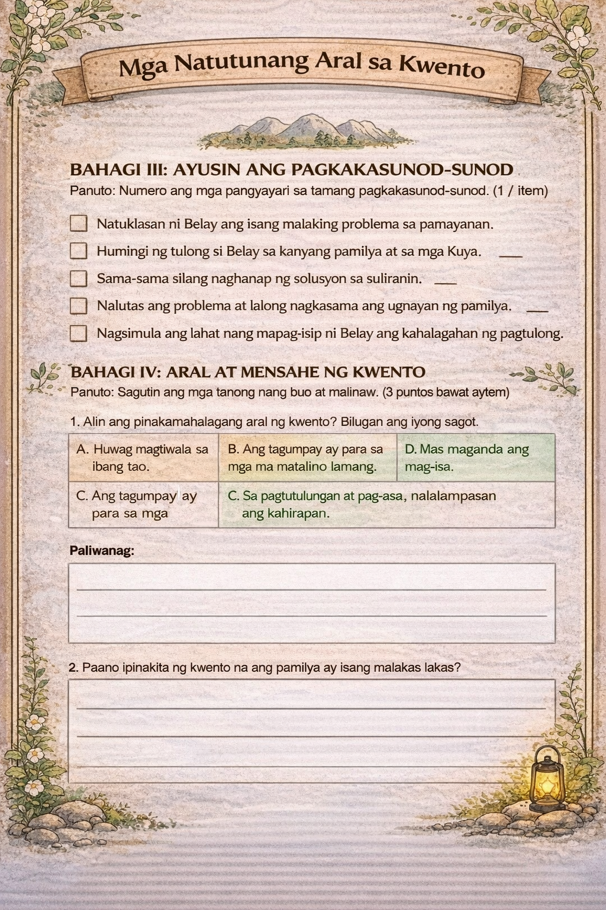
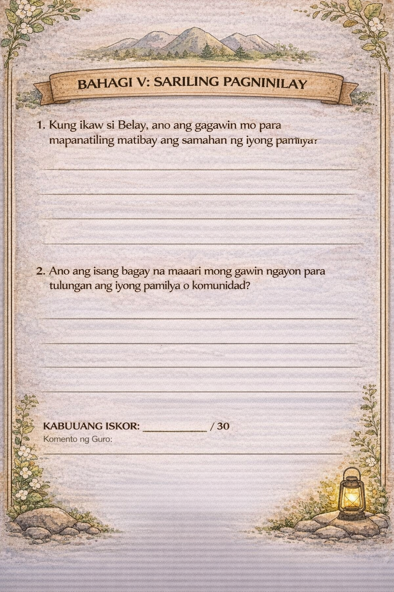
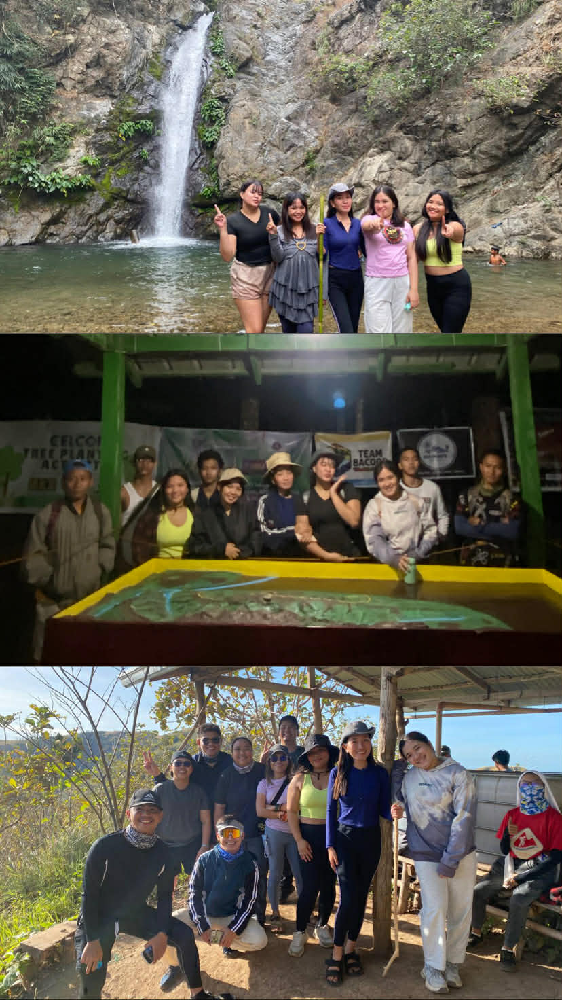

Ang
Pasalubong
Para
Kay
Belay
— ⟡ —
Isang Kwento ng Pamilya
Binubuksan ang kwento...
Isang Kwento ng Pamilya
Magkahalo palagi ang aking saya at pananabik tuwing masisilayan ko ang pagsikat ni haring araw. Isa lamang itong palatandaan na may isang araw nanaman ang lumipas at napagtagumpayan kong malagpasan, ngunit madalas ko ring tinatanong ang aking sarili "Palagi na lang ba akong mananatili sa ganitong katayuan?"
Yan ang sinasambit ko sa tuwing umaga paghaharap ako sa maliit na salamin sa aking silid at unti unting napapawi ang pakiramdam ng pagkagalak at napapalitan ng lungkot.
Hindi ko naman masisisi ang katayuan ng aking buhay sa aking nanay, siya ay nagpapakandahirap sa pagtitinda ng mga lutong ulam para lamang mayroong sapat na pang gastos sa araw araw.
Madaling araw pa lamang ay bumababa na sa paanan ng bundok si nanay upang maabutan niya ang mga traysikel na bumabyahe patungo sa bayan, halos 17 kilometro rin kasi ang layo ng aming lugar sa mismong pamilihan.
Habang abala ang aming ina sa pagtitinda, ang aking nakatatandang kambal na kapatid na si kuya Gino at kuya Gaston ay bumababa rin ng bundok upang mag hanap ng mga turistang nais umakyat sa bundok.
Ang aking dalawang kuya ay nagtatrabaho bilang tourist guide, sila ang gumagabay sa mga turista na nais masaksihan ang bundok kung saan kami naninirahan.
Doon ay nakikipagsapalaran siya sa mga mahal na presyo ng mga bilihin upang may maitinda, kapag balik ni nanay galing pamilihan ay agad agad niyang inihahanda ang pinamili upang maging pagkain ng mga turistang umaakyat sa bundok.
Hindi malaki ang kita sa pagiging tourist guide, kaya hindi ito sapat sa aming pang araw-araw na pangangailangan dahil may kanya kanyang pamilya rin namang binubuhay ang aking mga kuya.
Ako naman ang naiiwan sa bahay dahil ako raw ay mayroong mahinang resistensya at sakitin. Palagi lamang ako nakaabang sa mga kwentong iuuwi ng aking nanay at mga kuya.
Nang sumapit na ang hapon, nagulat nalamang ako nang marinig ang malambing na sigaw ng aking lolo — "Belay! Belay!" — sigaw ng aking lolo kaya ako ay nagmamadali upang dungawin siya sa ibaba ng aming munting kubo.
"Ano po iyon lo?" ang sambit ko sa sobrang pagkagalak dahil alam kong mayroon nanaman siyang bagong kwentong uwi para sa akin.
Ang aking lolo ay pitumpu't limang taong gulang na ngunit malakas pa rin ang tuhod at umeekstra pa rin sa pagiging tourist guide.
"Alam mo bang mayroon akong pasalubong sa iyo? Isang kwentong tiyak na ikamamangha mo," wika ng lolo halata sa kanyang tono na siya ay sabik na sabik sa kanyang gustong sabihin.
"Sabi na lo, hinding hindi mo ako makaklimutan uwian ng pasalubong e" sagot ko sa kanya.
Inilahad ng aking lolo ang tungkol sa isang grupo na sinamahan niya sa pag akyat ng bundok, isang buong grupo raw ito ng mga hikers na nais puntahan ang sikat na Lover's Tree.
Pagkarating daw ng mga grupong ito sa nasabing tourist spot ay nabigla na lamang ang lolo dahil plano pala ng lalaki mag propose sa kanyang kasintahan.
Naniniwala kasi ang mga tao rito na kapag daw inalayan ng singsing ng binata ang isang dalaga sa harap ng punong iyon ay sila na ang magkakatuluyan habang buhay.

"Kaya ikaw, belay, kapag nag kanobyo ka, sana ay alayan ka rin niya ng singsing sa harap ng punong iyon" malambing na payo ng aking lolo bago siya mag tungo sa loob ng kubo upang mag pahinga dahil muli siyang eekstra bukas.
Ako ay naiwan sa labas at aking iniisip ang payo ng aking lolo, "Paano naman ako mag kakanobyo, e hindi nga ako makalayo sa labas ng bahay tapos ang pangit pangit ko pa" malungkot kong bulong sa aking sarili.

Nawala na lamang ang aking malalim na iniisip noong kinagat ako ng malalaking langgam. "Aray, aray ko, ang kati" sambit ko habang kinakamot ang mga kagat ng langgam.
Sinundan ko ang hanay ng mga maliliit na langgam kung saan sila nanggagaling, natunton ko na nanggaling sila sa antigong baul na nakatago sa likod ng aming munting kubo, pinagpag ko ang mga langgam, at alikabok na bumabalot dito.
Sa sobrang kuryosidad ay naisip kong buksan ang baul at tumambad sa aking ang litrato ng aking ina na may kasamang lalaki.
Ang larawan ay kuha nila sa gilid ng maganda at mukang payapang talon na nasa kabilang dako ng bundok.
Base sa kwento ng aking mga kapatid kapag umuuwi, bago mo ito mapuntahan ay kailangan mo muna mag lakad ng tatlumpung minuto at madaan ang pitong malinaw na ilog.
Manghang maha ako sa mga larawang aking nakita kaya madali ko itong kinuha at hinintay ang pagdating ng aking nanay mula sa pagtitinda.
Sinimulan ko nang linisin ang aming bahay dahil maya maya lamang ay uuwi na ang nanay, "Belay, ako nga ay iyong tulungan buhatin ang basket ng mga tirang ulam" pagalit na sigaw ng nanay sa akin halatang hindi maganda ang benta ng aking ina kaya ganun na lamang ang galit ng kanyang mga sigaw
"Opo, nay, papunta na po!" ang aking tugon sa kanya.

Patuloy ang aking nanay sa pag aayos ng mga tira niyang tinda, sa sobrang sabik kong malaman ang kwento sa likod ng mga larawang nakita ko kanina ay sinimulan ko na ang pagtatanong sa aking ina.
"Nay, sa Aloha Falls po ba ninyo kuha ang mga litrato na ito?" sabay pakita ko sa kanya ng mga larawan.
Mas lalong nag iba ang timpla ng mukha ng aking ina noong makita niya ang mga larawan, "Ano ka ba naman belay! hindi ba't sinabi ko na sa'yo, na huwag na huwag mo papakialaman ang mga gamit ko!"
"Wala nang pero pero, himbis magsaing ka at mag linis ng bahay anong ginawa mo?! Ayan nagkakalkal ng mga gamit na hindi naman dapat kalkalin, jusko belay, pagod na pagod na nga ako sa pagtitinda, pati ba naman pagdating rito sa bahay ako pa rin ang kikilos"

Ramdam ko ang galit sa akin ng aking ina at ramdam ko rin na mayroon siyang iniiwasan. "Pasensya na po, Nay, napasarap po kasi ang kwentuhan namin ni lolo kanina, at hindi ko sinasadyang pakialaman ang gamit ninyo" nangingilid ang aking luha habang sinasambit ko ang mga salitang ito.
Hindi ako kinibo ng aking nanay.
"Atsaka nay, yung kasama mo naman sa larawan na lalaki, yun ba ang tatay? Bakit po ganon na lamang ang galit mo sa kanya?" dagdag ko pa, humarap sa akin ang nanay at saka sinabing "Huwag mo siyang tatawaging tatay."
"Huwag mong ituturing na ama ang lalaking hindi nagpaka-ama. Hindi siya ang nag-alaga, hindi siya ang nagbigay, at hinding-hindi namin kailangan ang pangalan na iyon dito sa bahay."
Iyon ang kanyang huling sinabi bago siya napabuntong-hininga at bumalik sa pag-aayos. Tila nabutas ang balon sa dibdib ko, napalabas na lamang ang luha ko nang hindi ko na mapigilan.
Umusad ako palabas, hinayaan ko ang hangin na dumampi sa pisngi ko kasabay ng pag agos ng luha sa aking mga mata.
Nag tungo ako sa aming bakuran dahil nakaugalian ko nalang ikwento ang aking sama ng loob sa mga tanim naming binhi ng kape.
Dahil sabi ng lolo, mas masarap ang kape kapag mapait, at ang isang sikreto upang mas maging mapait ang bunga ng kape na aming binhi ay ikwento namin ang mga sakit na nararamdaman sa mga binhi nito.
Ang mga binhing ito ay ibinababa ni kuya gino at kuya gaston sa paanan ng bundok at inaangkat naman ng mga taga bayan.
Sa gitna ng aking pagluha sa mga binhi ng kape sa aming bakuran nilapitan naman ako ni lolo na halatang kagagaling lang sa pagpapahinga.
"Oh, iha, nagtalo nanaman ba kayo ng iyong nanay?" wika ng lolo habang marahang tinatapik and aking kanang balikat.
"Opo, lo, dahil po sa larawan na ito" sabay pakita ng larawang una ko ng ipinakita sa aking ina.
Natahimik ng ilang sandali si lolo saka bumuntong hininga "intindihin mo na lamang ang iyong ina, belay, lalo na't hindi pa rin naghihilom ang sugat na iniwan ng inyong ama simula noong nilisan niya kayo."
Hindi madali para sa akin ang payo ni lolo upang intindihan ang aking ina ngunit wala naman akong magagawa kahit na sabik na sabik ako sa yakap at pagkalinga ng aking ama.
Dahil tama nga si nanay, kahit kailan ay hindi nagpakaama ang aming tatay.
Sa gitna ng subok na pagpapatahan ng aking lolo sa tuloy tuloy kong pag iyak ay nakita ko na naglalakad si kuya gaston ngunit nanibago ako dahil nasanay ako na tuwing uuwi ang aking mga kuya ay dalawa sila, pero ngayon ay isa lang siya.
Nag derederetso ang kuya sa aming munting kubo at nagmano kay nanay at kami naman ni lolo ay pumasok na rin sa loob upang mag hapunan.
Habang kami ay magkakaharap sa hapag kainan tinanong ko ang kuya gaston kung bakit wala ang kuya gino.
"Naiwan si gino ron, naiwan sila kasama ng iba pang tour guide, may ibinaba kasi silang babaeng turista, hindi kinaya ang pag akyat sa tuktok ng bundok, at doon binawian ng hininga" matamlay na saad ng kuya.
Sumabat naman ang lolo na nakasalubong niya raw ang babaeng turistang iyon.
"Eh, yung babaeng 'yon, yun ang babaeng ayaw paakyatin kaninang umaga, dahil meron din siyang karamdaman tulad nung kay belay, yung bawal mapagod" dagdag ni lolo.
"Si belay, nagiinarte lang yan, mayron bang ganong sakit? Bawal mapagod? Gawa gawa na lamang niya yan" sabat naman ng aking ina.
Nadagdagan pa ang sakit na nararamdaman ko sa iwinika ng aking nanay nang biglang mag salita ang aking kuya gaston.
"Nay, yung babaeng binawian ng buhay, matagal niya na pangarap ang umakyat ng bundok, at yun daw ang huling hiling niya sa mga magulang niya kaya pinayagan na nila itong umakyat."
Hindi na lamang umimik ang aming ina.
Matapos ang aming hapunan ay balak ko sana hintayin sa pag uwi si kuya gino ngunit sabi ng lolo ay baka bukas pa ito makauwi kaya nagtungo na lamang ako sa silid at natulog.
Sa sobrang himbing ng aking tulog ay hanggang sa panaginip nakikita ko kung gaano kaganda ang bundok na aming tinitirahan, ang ganda ng batong nakausli sa ituktok ng bundok, isang malaking bato na may nakalagay na "batong amat" nagpatuloy pa ako sa paglalakad at kinausap ang isang lalaki na nakatayo rin sa gilid ng bato.
"Ano po ang ibig sabihin ng batong amat?" nagtatakang tanong ko.
"Ah, yan ba, ang amat ay matandang salita na ang ibig sabihin ay multo" sagot ng lalaki.
Hindi ko maintindihan kung bakit ang katumbas ng amat ay multo samantalang wala namang na balitang may multo rito, "paano po naging multo ang ibig sabihin ng amat?"
"Ineng, kaya tinawag na multo ang amat ay dahil noong panahon ng mga hapon, ang ilalim ng kinatitirikan ng batong yan ang nagsilbing hospital nila" wika ng lalaki.
Patuloy niyang kinwento na kaya nagmula raw sa matatanda ang salitang iyon dahil dati raw tuwing madaling araw ay may mga sundalong hapon na nagpaparamdam sa kanila na humihingi ng tulong upang gamutin sila kapalit ng mga ginto at pilak.
Nagsimula na akong matakot at tumayo ang aking mga balahibo...
...dahil ako ay matatakutin ng bilang maputol ang aking panaginip dahil ginising ako ni kuya Gino.
"Belay, Belay, bumangon ka na sa iyong pagkakatulog at tulungan mo si nanay ihanda ang gamit niya pamalengke, mamaya maiwan nanaman siya ng mga traysikel" mahinahon na saad ni kuya Gino sa akin.
"Kuya Gino! mabuti naman nakauwi ka na, may pasalubong ka ba sa akin?" 'yan ang tanong ko sa kanya na may kasamang pananabik pagkamulat ng aking mata.
"Pasensya na belay, ngunit marami pa akong kailangan gawin, hayaan mo babawi ako sa susunod".

Napalitan nanaman ng lungkot ang aking pananabik, kagaya ng dati, niligpit ko ang aking higaan at tinignan ko ang aking sarili sa harap ng salamin.
"Nais ko na rin makita ang pamumuhay ng ibang tao sa labas ng bahay na ito, nais ko rin makapag-aral gaya ng ibang kabataang tulad ko", malungkot kong sambit habang kinakausap ang aking sarili.
Pag-alis nila nanay ay naiwan nanaman akong mag isa.
Ilang araw ang lumipas mula nang gabi na iyon. Hindi ko maiwasang balikan ang mga larawang nakita ko sa lumang baul.
Isang umaga, habang nililinis ko ang harapan ng aming kubo, narinig ko ang malakas na tawa ni lolo mula sa likod ng bahay.
Palapit ako at nakita kong kasama niya si Kuya Gino na may dalang munting kahon.
"Belay! Halika, may regalo ka dito mula sa mga turista!" masayang sigaw ni Kuya Gino. Agad akong nagtungo sa kanilang kinaroroonan nakaramdam ako ng kakaibang galak dahil tinupad ni kuya Gino ang pangako niyang babawi siya.
Naupo ako sa tabi nila habang iniabot ni kuya sa akin ang kahon. Sa loob nito ay isang simpleng sulat mula sa isang batang turista na nakarating daw sa Aloha Falls.
Isinulat ng batang iyon kung gaano kaganda ang talon, kung paano ang malinaw na tubig nito ay nagbibigay ng kapayapaan sa kanyang puso.
"Para sa taong nagbigay ng daan para makapunta kami rito" nakasulat sa sobreng gawa sa papel. Hindi ko mapigilan ang ngiti.
Nang umaga ring iyon, habang kami ni lolo ay nakaupo sa labas ng kubo at tinatamasa ang malamig na hangin ng bundok, biglang nagsalita si lolo nang seryoso.
"Belay, alam mo bang ang mga taong pumupunta rito ay nagmula pa sa malalayong lungsod? Itinuturing nilang paraiso ang ating bundok. Ang Batong Amat, ang Lover's Tree, ang Aloha Falls mga bagay na araw-araw mong naririnig sa kwento at hindi mo man lang pinahahalagahan."
Tumingin ako sa malayo. Pero paano ko naman papahalagahan ang bagay na hindi ko pa naman napupuntahan sa personal ngunit totoo nga.
Halos bawat araw ay nakakakita ako ng makulay na ulap na bumabalot mula sa tuktok ng bundok, ang puting usok ng sariwang hangin, ang mga ibon na lumipad nang malaya. Ngunit hindi ko ito kailanman tinanaw nang may pagpapahalaga.
"Kaya naman, bukas, isasama ka namin sa aming tour. Matagal ka na naming ikinulong at hindi pinayagan lumabas nang kasama kami" Nagtataka ako dahil ang sabi nila ay may sakit ako na bawal mapagod kaya hindi ako pinalalabas ng bahay ngunit ngayon masaya ako dahil sa mga narinig ko.
Nang gabing iyon, lumapit na rin si nanay at ang aking mga kuya sa sala. Marahil ay may nabalitaan si nanay dahil habang kami ay nagkakainan ng hapunan ay dahan-dahan siyang nagsalita.
"Belay… tungkol sa larawan. Pasensya na kayo. Hindi kayo dapat lumaking walang kwento ng inyong ama."
Maingat, masakit at mabagal na ikinwento ni nanay ang nakaraan. Ang ama raw namin ay umalis at nagkaroong ng ibang asawa. Takot raw siya at hindi niya kayang makita kaming nasasaktan dahil mas pinili ng aking ama na kumalinga ng anak na hindi naman sa kanya kaysa sa mga totoong anak niya. Ngunit si nanay ay lumaban para sa amin, para sa kanyang sarili, para sa bundok na aming tinitirhan.
"Ang larawan na iyon sa Aloha Falls… iyon ang huling beses na kami ay magkasama at masaya. Doon niya huling sinabi sa akin mahal niya ako."
Tumahimik si nanay sandali, at saka nagpatuloy. "Kaya huwag mo siyang sisihin, Belay. Sisihin mo na lamang ang takot na minsan ay nagtatago sa puso ng bawat isa sa atin."
Lumabas ang luha ko nang tahimik. Ngayon ko lang naintindihan ang lahat ng tiniis ng aking nanay, ang lahat ng araw na bumababa siya ng bundok para sa aming pagkain, ang lahat ng gabing natutulog siyang nag-iisa ang lahat ng ngiting ipinagtatago niya sa likod ng pagod.
Hindi ko siya naintindihan noon. Ngunit ngayon, habang nakikita ko ang kanyang mga mata na umaalon ang luha, unti-unting natanggap ng aking puso ang katotohanan, ang pamilyang ito, kahit kulang, kahit may mga piling sugat ay buong-buo.
Kinabukasan, tulad ng pangako ni lolo, isinama niya ako sa kanyang tour. Unang pagkakataon ko na lumabas ng bahay nang ganoon kalayo. Hawak-hawak niya ang aking kamay habang kami ay unti-unting lumalakad paakyat ng bundok.
Naramdaman ko ang malamig na ambon na dumampi sa aking mukha, ang basa-basang lupa sa ilalim ng aking mga paa, at ang amoy ng mga halaman na parang bagong linis ng ulan.
Nang marating namin ang Batong Amat, tumingin ako sa malawak na kapatagan sa ibaba. Doon nakita ko ang bayan, ang mga bubong ng mga bahay, ang mga kalsada na parang linya ng palad.
Doon nakita ko ang aming munting kubo - napakaliit nito mula sa itaas, ngunit puno ng buhay. Puno ng mga kwentong narinig ko sa hapag-kainan, puno ng mga tawa ni lolo, puno ng mga dahon ng kape na nagbibigay ng kita sa aming pamilya.
"Lo, bakit kaya nais ng mga turista na pumunta rito? Mayroon ba na silang mas maganda sa kanilang lugar?" tanong ko.
"Hindi ang sagot. Mayroon silang mga gusali, mga mall, mga sasakyan. Ngunit wala silang katahimikan tulad dito. Wala silang mga ibon na nagtatanghal tuwing umaga. Wala silang talon na naghuhugas ng pagod. Ang tinitirhan natin, belay, ay kayamanan at hindi ito nabibili ng pera."
Patuloy kaming lumakad pababa at sa daan ay dumaan kami sa Lover's Tree. Ang punong ito ay matagal nang nakatayo sa gilid ng landas matanda na, nakabalot ng lumot, ngunit matatag pa rin ang mga ugat sa lupa.
Niyakap ko ang puno ng sandali, nang hindi ko alam kung bakit. Baka dahil parang pamilya rin ito matanda, nandiyan lang, hindi nawawala.
Nang makauwi kami, may kasamang grupo ng mga kabataang turista na nagsisimula pang umakyat.
Nakita ko si nanay na abala sa paghahanda ng kanyang mga tinda mainit na mais, sarsa ng kape, mga lutong ulam, at mga suman na yari sa sarili nilang palayan.
Tinanaw ko siya nang matagal. Nakita ko ngayon ang kanyang likod - hindi ang likod ng isang taong pagod, kundi ang likod ng isang taong nagtataglay ng lakas. Lumapit ako sa kanya at nang makita niya ako ay nagulat siya.
"Nay… salamat po." Tumingin siya sa akin, nagtataka. "Sa ano?"sagot niya "Sa lahat. Sa bawat araw na binababa ninyo ang bundok para sa amin. Sa bawat tirang ulam na binubuhay kayo. Sa lahat ng hindi ninyo sinabi ngunit ginawa ninyo. Salamat po, nanay."
Hindi siya nagsalita. Ngunit niyakap niya ako nang mahigpit, mas mahigpit kaysa sa akalain ko. At sa yakap na iyon, naramdaman ko ang lahat ng salitang hindi niya masabi. Ang pagmamahal na hindi masukat-sukat, ang pagod na pinipigil niyang ipakita, ang pangako na araw-araw niyang tinutupad sa bawat paggising.
Nang takipsilim na at nagsimula nang mangolekta ang gabi ng liwanag, umupo kami ng buong pamilya sa labas ng aming kubo. Ang mga bituin ay unti-unting sumikat, at ang amoy ng kape mula sa aming bakuran ay humahalo sa malamig na hangin ng gabi.
Nandoon si lolo na nagsasalaysay ng mga kwento ng bundok, si Kuya Gino at Kuya Gaston kasama ang kanilang sariling pamilya na nagtatawanan sa gilid, at si nanay na ngumingiti nang tahimik habang naglalagay ng mainit na inumin sa aming mga kamay.

Naisip ko ang sulat ng batang turista. Naisip ko ang mga taong naglalakbay nang malayo para marinig ang katahimikang ito, para matamasa ang ganda ng bundok na aming tinitirhan.
At naisip ko ang sarili ko - ang batang naninirahan sa gitna ng lahat ng kagandahang ito ngunit bulag sa kayamanang nasa paligid niya.
Minsan, ang mga bagay na pinaka-hinahanap natin ay ang mga bagay na lagi nang nasa atin ang pamilyang hindi perpekto ngunit nandoon palagi, ang lupang hindi maluwag ngunit tahanan, ang mga tao na hindi palaging may tamang salita ngunit may palaging handang puso.
Ang kayamanan ng isang tao ay hindi laging nakikita sa kanyang bulsa.
Minsan, naroon ito sa mga kamay ng isang ina na mainit na humahaplos sa atin kahit pagod, sa mga kwento ng isang lolo na nagpapahalaga sa bawat araw, at sa kagandahan ng bundok na kahit tayo ay ipinanganak ng nakatingin sa ibaba lagi ring nagbubukas ng mga bisig para sa lahat ng nais umuwi.
Sa araw na iyon, natapos ang aking paghahanap ng sagot sa tanong na matagal na ring naghihintay sa loob ng aking dibdib.
At ang sagot - tulad ng ganda ng Aloha Falls, tulad ng lakas ng Lover's Tree, tulad ng katahimikan na nagmumula sa tuktok ng Batong Amat - ay lagi nang nandoon. Naghihintay lamang na ang aking mga mata ay magbukas nang malawak, at ang aking puso ay matuto sa wakas na tumanggap.






Isang Kwento ng Pamilya
"Ang kayamanan ng isang tao ay hindi laging nakikita sa kanyang bulsa."
Let us show you around.